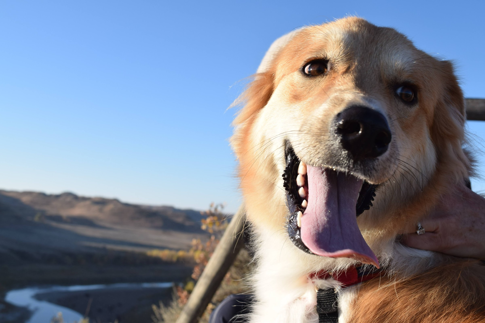

My Interests
I am passionate about staying active and maintaining a healthy lifestyle. One of my favorite ways to exercise is through running, especially distance running. I love the discipline and mental clarity that comes with long-distance training, and I’ve completed several half-marathons. Running not only keeps me physically fit but also helps me clear my mind and stay focused on my goals. Whether it’s a trail run in the woods or a jog through the city, I find joy in every step.
Spending time outdoors is another one of my greatest joys. I love hiking and exploring nature, whether it’s a challenging mountain trail or a peaceful forest walk. In the winter, I enjoy snowboarding and hitting the slopes whenever I can. Being outdoors allows me to disconnect from the busyness of everyday life and reconnect with nature, which I find incredibly refreshing and inspiring. I also really love spending time outdoors with my dog!
When I’m not exercising or outdoors, I love diving into a good book. My favorite genres include nonfiction, historical books, and classics. I enjoy learning about real-world events, exploring different time periods, and gaining insights from the perspectives of great authors. Reading not only expands my knowledge but also helps me relax and unwind after a busy day.
Some books I've read recently:
- Martyr!, Kaveh Akbar
- The Master and Margarita, Mikhail Bulgakov
- Never Let Me Go, Kazuo Ishiguro